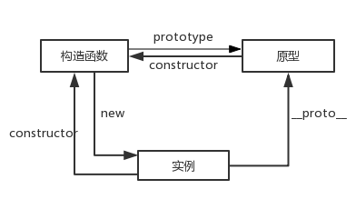

什么是面向对象？
面向对象（Object Oriented，OO）是软件开发方法。面向对象的概念和应用已超越了程序设计和软件开发，扩展到如数据库系统，交互式界面，应用结构，应用平台，分布式系统，网络管理结构，CAD技术，人工智能等领域。面向对象是一种对现实世界理解和抽象的方法，是计算机编程技术发展到一定阶段后到产物，是一种高级的编程思想。
面向对象就是一种新的编程模式。
面向过程？把所有的功能都写在一起，逐行实现
面向对象在其它编程语言中普遍使用，Java，PHP，Python
什么是对象？
什么是收音机，对象是一个整体，对外提供一些操作。
什么是面向对象开发？
就是在使用对象时，只关注对象提供的功能，不关注其内部细节。
比如，每次使用封装好的运动框架
注意：面向对象是一种通用思想，并非只在程序中使用，任何事情都可以使用－－－－公司老板分配任务
面向对象的特点
封装：不考虑内部实现，只考虑功能实现
继承：从已有对象上，继承出新对象
多态：多种形态，一个功能的多种不同应用场景
对象的组成
方法（有归属）－－－－函数（自由的）
属性（有归属）－－－－变量（自由的）
OOA和OOD
OOA面向对象分析：
人类起源：单细胞－－－－人，进化过程中，增加了各种器官，各个器官之间分工协作
为什么统治世界的是人类？－－－－－精密的分工协作
大规模分工，精密协作
面向对象分析：将大问题拆分成小问题，并试图用分工协作来完成的思维方式。
OOD面向对象设计：
1.分析模块后，确定职责
大哥招小弟－－端茶倒水，点烟捶背捏脚
2.确定耦合关系
确定通信关系，如何交流，暗号
弊端：当耦合达到一定程度时，如果换了一个助理，需要重新耦合，资源消耗太大
高内聚低耦合
3.为OOP做准备
分析角色特性：
讲师－－－－技术过硬
－－－－讲课技能（口才）
销售－－－－沟通技巧（口才）
找到角色共同特性－－－－继承
对象如何被发明的？
大量信息的处理和加工困难，打包之后，将内容包含在其中。信息传递速度更快，效率更高
面向对象和面向过程的区别
面向对象－－先实现功能，再运行。分工协作，同时发生，解决问题。
面向过程－－一边实现，一边运行。效率低下。
面向对象并不是程序员发明的。在程序中我们叫面向对象（OO），在生活中叫分工协作。
思考 > 语法
构造函数的使用
当我们需要一套可以反复经过使用的，经过分类，代码设计经验的总结时，就用到了设计模式。
内功心法和武功招式
设计模式：
工厂模式：原料、加工、出厂
functioncreatePeople(name,age,like){
varobj= newObject(); //原料
obj.name = name; //加工
obj.age=age;
obj.like=like;
obj.show=function(){
alert("我叫"+this.name+",今年"+this.age+"岁,喜欢"+this.like)
};
returnobj; //出厂
}
varobj=createPeople("AAA",23,"LOL");
varobj2=createPeople("BBB",30,"JAVA");
obj.show();
obj2.show();
但是这种工厂模式已经被JS抛弃，
因为JS内置了一种的工厂模式
functionCreatPeople(name,age,like){
this.name=name;
this.age=age;
this.like=like;
this.show=function(){
alert("我叫"+this.name+",今年"+this.age+"岁,喜欢"+this.like);
}
}
varobj= newCreatPeople("ABC",20,"PHP");
varobj2= newCreatPeople("QWE",32,"Python");
obj.show();
obj2.show();
JS内置的工厂模式比传统的工厂模式更高效，复用性更强。
JS内置的工厂模式叫构造函数。
构造函数和对象的关系
面向对象－－－－对一个对象进行编程
构造函数－－－－提供一个对象供你编程
通过构造函数，实现面向对象编程
使用Json创建对象
varobj={
name:"admin",
age:23,
like:"LOL",
show:function(){
alert("我叫"+this.name+",今年"+this.age+"岁,喜欢"+this.like)
}
}
obj.show()
使用构造函数创建对象
function CreatPeople(name,age,like){
this.name = name;
this.age = age;
this.like = like;
this.show = function(){
alert("我叫"+this.name+",今年"+this.age+"岁,喜欢"+this.like);
}
}
var obj = new CreatPeople("ABC",20,"PHP");
var obj2 = new CreatPeople("QWE",32,"Python");
obj.show();
obj2.show();
1.掌握面相对象编程的好处
2.轮播图面向对象改造
原型的概念
在对象中，两个新创建的函数，是不相等的：
varobj1={
fn:function(){
alert(1);
}
}
varobj2={
fn:function(){
alert(1);
}
}
console.log(obj1.fn ==obj2.fn); //false
在构造函数中，同样属于两个新创建的函数，也是不相等的
functionFn(name){
this.name=name;
this.show=function(){
alert(this.name);
}
}
varobj1= newFn("AAA");
varobj2= newFn("BBB");
console.log(obj1.show==obj2.show); //false
此时可以看出构造函数的多次创建会产生多个同名函数，造成冗余太多。
利用原型prototype解决。
functionFn(){}
console.log(Fn.prototype);
//constructor表示当前的函数属于谁
//__proto__ == [[prototype]]，书面用语，表示原型链
var fn1 = new Object();
var fn2 = new Object();
Object.prototype.show = function(){
alert(1);
}
console.log(fn1.show==fn2.show); //ture
此时，任何一个对象的原型上都有了show方法，由此得出，Object.prototype身上的添加的方法，相当于添加到了所有的Object身上。
为了解决构造函数的冗余问题，我们将属性写在构造函数内，方法写在原型中。这是面向对象的编程格式之一。
面向对象的编程格式之一：
1.属性写在构造函数内；
2.方法写在原型中
3.构造函数中的this指向当前new出来的对象
4.原型方法中的this指向当前原型所属的函数被new出来的对象

1.面向对象选项卡
2.烟花效果案例